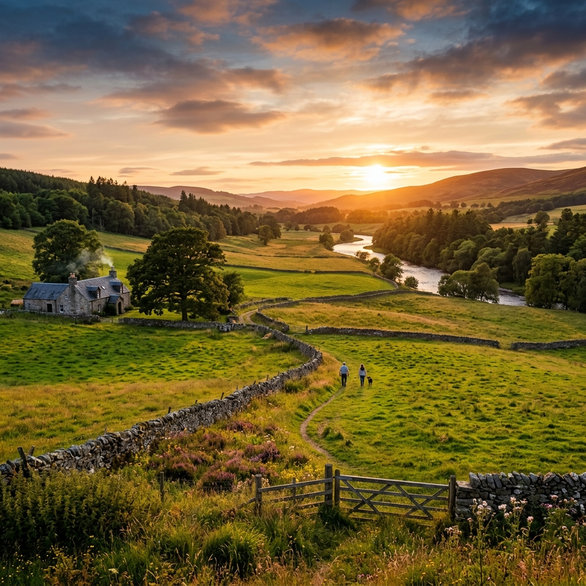
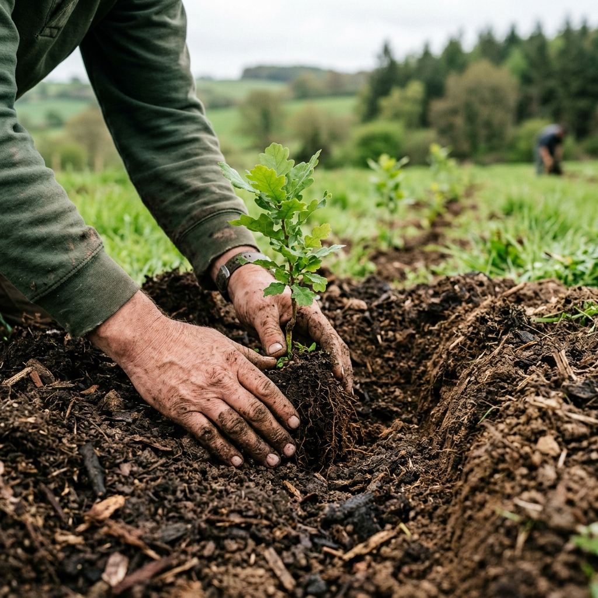
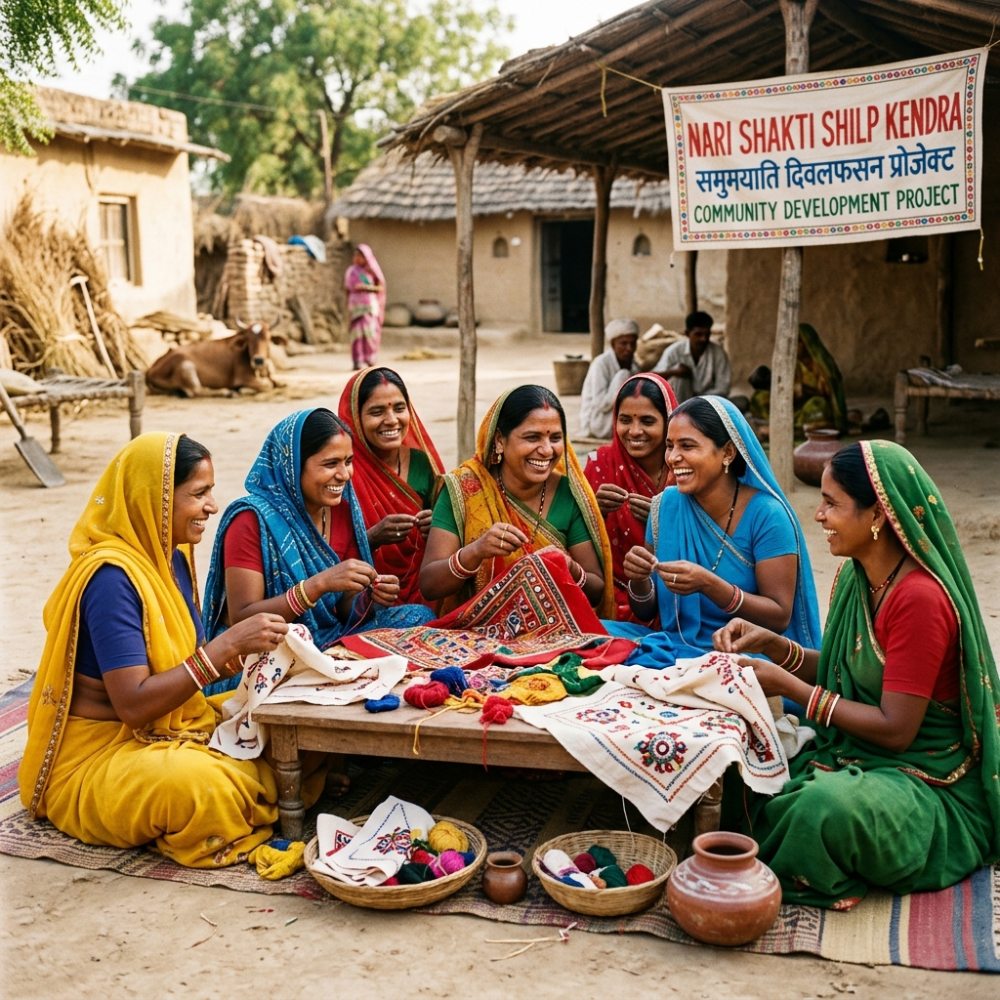
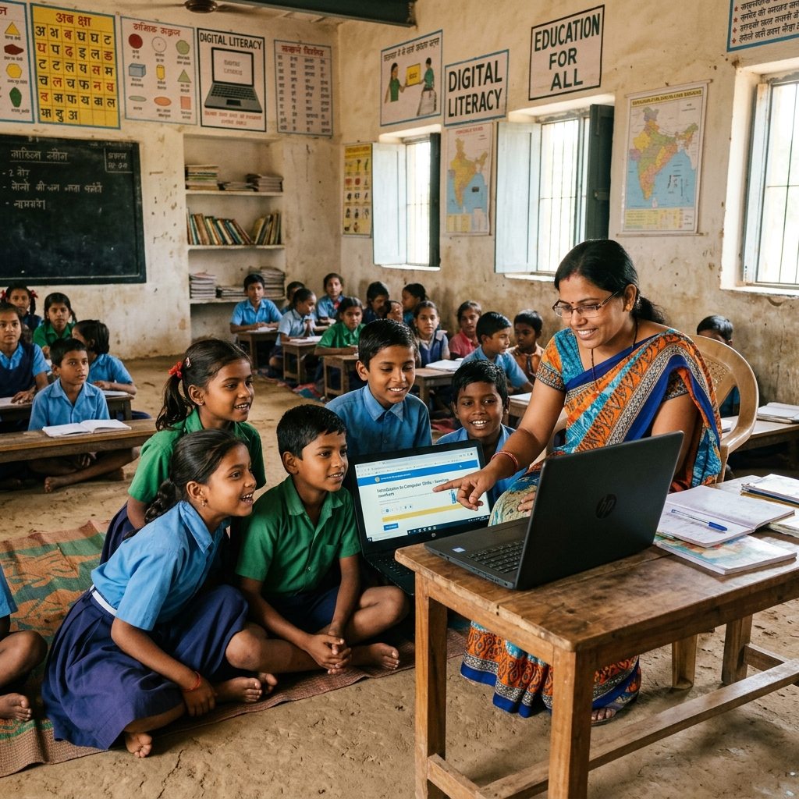

Driving climate action, agricultural innovation, and rural livelihood generation for a sustainable tomorrow.
To foster resilient, self-reliant rural ecosystems through innovation, education, and ecological restoration.
Read MoreAgroforestry & climate-smart farming systems.
Digital literacy, AI, and coding for rural youth.
Regenerative landscape and nature conservation.
Partner with us to fulfill your Corporate Social Responsibility goals. Together, we can create lasting, measurable impact in rural communities across India.

Historic initiative will protect 1.4 million acres of Yucatán State and honor Maya culture

Report connects forests with human health

Dr. Stacy Beller Stryer on the connections between time outside and our health
Our initiatives are strictly aligned with the UN Sustainable Development Goals.
"The IT skill development program completely changed my career path. I now work as a data operator."
"With VUFT's agroforestry training, my crop yield has stabilized even during droughts."
We are grateful for the support of our esteemed partners.
"Vashundhara Udgar Foundation Trust is doing exemplary work at the grassroots level. A highly recommended partner for sustainable CSR initiatives."
Over 10,000 saplings planted across 50 villages in collaboration with local farmers.
New smart learning center inaugurated to teach AI and coding to young women.
Your support helps us bring vital training, resources, and ecological restoration to the communities that need it most.